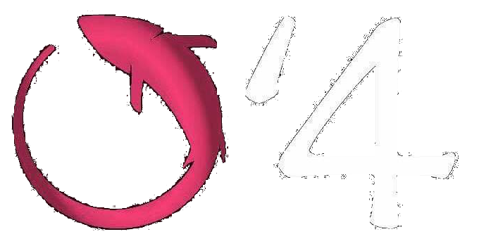

notre établissement
Situé  rue des pèlerins, en plein centre ville d'Obernai
rue des pèlerins, en plein centre ville d'Obernai
se feras un plaisir de vous ouvrir ses portes vers d'autre contrées culinaire.
Situé  rue des pèlerins, en plein centre ville d'Obernai
rue des pèlerins, en plein centre ville d'Obernai
se feras un plaisir de vous ouvrir ses portes vers d'autre contrées culinaire.
 sushi bar s'engage à préparer des plats de qualité et équilibrés. Nos poissons et aliments de préparation sont frais. La santé de nos clients est importante pour nous, c'est pourquoi nous préparons vos plats dans un cadre hygiénique irréprochable.
Tous nos plats sont préparés à la minute.
Depuis 2014, nous nous efforçons chaque jour de vous proposer une expérience culinaire unique. Grâce à des produits de qualité et une cuisine créative, nous tentons de donner une nouvelle dimension à la cuisine japonaise en nous inspirant de la culture culinaire française. Aux antipodes de la restauration rapide, nous prenons le temps de vous offrir un moment dont vous vous souviendrez.


Quand nous passons dans le coin avec ma compagne, c’est un incontournable, personnel souriant et pro, mets au top, cadre soigné, propre, et design... LE TOP!
Les sushis sont vraiment très bons, les produits sont frais et plutôt bien présentés comparé à d'autres enseignes. Le Bo-Bun proposé était vraiment excellent, on sent le fait maison dans les nems. Le service était très agréable et la personne présente était aux petits soins. Nous y retournerons avec plaisir


Étant grand amateur de Japonais ( je fais plusieurs restaurants par semaine lors de mes déplacements en France ) je trouve que ce restaurant représente tout ce que je cherche dans ce type d'établissement. C'est propre, sobre, avec des tarifs normaux pour la qualité des produits servis. Le service est sérieux avec le sourire, étant seul à table j'ai beaucoup apprécié qu'elle vienne échanger quelques mots avec moi. Bref une adresse à découvrir dans cette belle ville pleine de charme.